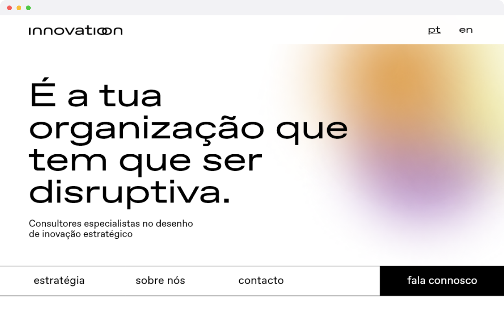
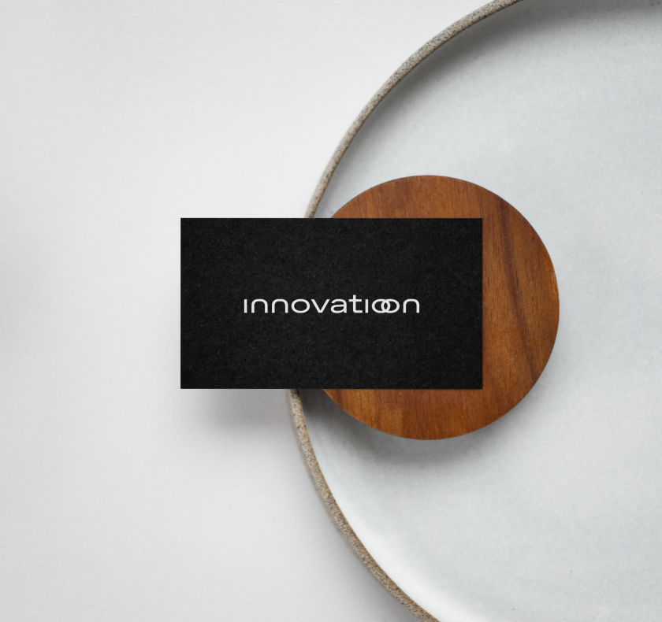

<!DOCTYPE html>
<html lang="en">
<head>
    <meta charset="utf-8">
    <meta name="viewport" content="width=device-width, initial-scale=1.0">
    <meta http-equiv="X-UA-Compatible" content="ie-edge">
    <title>Marta Aleixo Portfolio</title>
    <link rel="stylesheet" href="assets/css/style.css">
    <link rel="preconnect" href="https://fonts.googleapis.com">
    <link rel="preconnect" href="https://fonts.gstatic.com" crossorigin>
    <link rel="preconnect" href="https://fonts.googleapis.com">
    <link rel="preconnect" href="https://fonts.gstatic.com" crossorigin>
</head>
</html>
<body>
<header>
    <div class="container-2">
        <h1><a href="index.html" id="intro">marta aleixo</a></h1>
        <button class="btn--toggle-menu">
<svg xmlns="http://www.w3.org/2000/svg" width="24" height="24" viewBox="0 0 24 24" fill="none" stroke="currentColor" stroke-width="2" stroke-linecap="round" stroke-linejoin="round" class="feather feather-align-justify"><line x1="21" y1="10" x2="3" y2="10"></line><line x1="21" y1="6" x2="3" y2="6"></line><line x1="21" y1="14" x2="3" y2="14"></line><line x1="21" y1="18" x2="3" y2="18"></line></svg>        </button>
        <nav id="main-navigation">
            <ul>
                <!-- <li class="menu-nav_item active"><a href="index.html">home</a></li>-->
                <li class="menu-nav_item"><a href="work.html" class="menu-nav_link">work</a></li>
                <li class="menu-nav_item"><a href="cv.html" class="menu-nav_link">cv</a></li>
                <li class="menu-nav_item"><a href="about.html" class="menu-nav_link">about</a></li>
                <li class="menu-nav_item"><a href="contacts.html" class="menu-nav_link">contacts</a></li>
            </ul>

        </nav>
    </div>
</header>
    <main class="container">
        <div class="wrapper-intro">

        </div>
        <div class="boxes">
            <div class="wrapper-intro">
                <div class="card">
                    <div class="content-text">
                        <figure>
                            
                        </figure>
                        <div class="wrapper">
                            <div>
                                <h3>The challenge</h3>
                                The term innovation, in the business context, is vague and sometimes confusing in the
                                relationship it has with the growth of a particular business. For experienced executives
                                or new investors, the problem lies in validating the eligibility for this type of growth
                                plan and which one is right for their business.
                                The challenge was to develop a digital solution that could communicate the services
                                provided by this consulting company and that could reach different types of segments.
                            </div>
                            <div>
                                The challenge was to develop a digital solution that could communicate the services
                                provided by this consulting company and that could reach different types of segments.
                                Initiate a digital presence for the business by developing Innovation Consulting as a
                                brand and creating a website.
                            </div>
                        </div>
                        <div class="wrapper">
                            <div>
                                <h3>The solution</h3>
                                <p class="wmdy"> It was created a digital world to show what Innovation does.
                                    Innovation Consulting helps executives and new investors within mid-level private
                                    and public sector organisations find the right strategic innovation plan to grow
                                    their businesses.
                                    It adapts the innovation plan to the needs and evolution of the company, through the
                                    execution of plans in an agile framework, encouraging the transformation of new
                                    ideas into products or services.</p>
                            </div>
                            <figure>
                                
                            </figure>
                        </div>
                        <a href="https://www.behance.net/gallery/138419527/Innovation-Business-Consulting"
                            target="_blank" class="moodybh">know more ↗</a>
                    </div>
                </div>
            </div>
    </main>
<footer>
    <p class="copy">©marta aleixo 2023</p>
</footer>
<script src="/assets/js/script.js"></script>


</body>

</html>